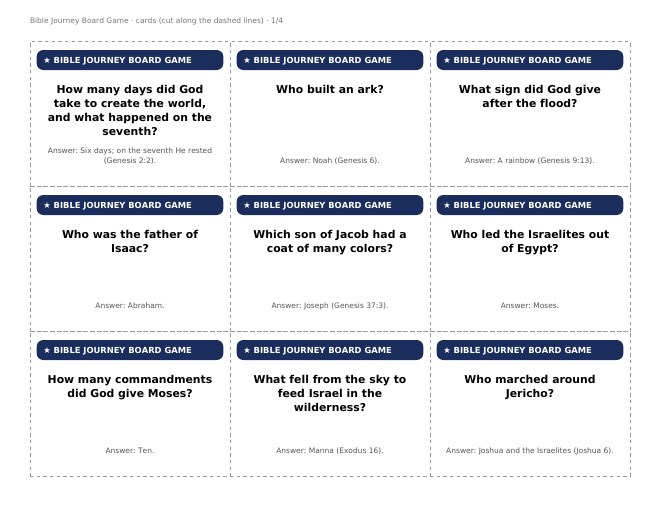

Printable Board Games › Bible Journey Board Game
Bible Journey Board Game (Free Printable)
Print it, cut out the cards and play in 20–30 minutes. Bible-story squares send you ahead or back, and trivia cards earn extra moves.


What’s in the PDF
- A full-page 40-square game board (US Letter, landscape; prints fine on A4).
- 36 cut-out cards with answers.
- Rules on one page, plus a QR code to our free iPhone app.
- 2–6 players or teams · ages 7+. You need one die and a coin or button for each player.
How to play
- Each player puts a marker (a coin or button) on START. Youngest goes first.
- Roll one die and move that many squares.
- Land on a Bible-story square? Do what it says.
- Land on a ★ square? The player on your left reads a card. Answer correctly and move ahead 2.
- First to reach the New Jerusalem wins. (You don’t need an exact roll.)
A few of the cards
- How many days did God take to create the world, and what happened on the seventh? — Six days; on the seventh He rested (Genesis 2:2).
- Who built an ark? — Noah (Genesis 6).
- What sign did God give after the flood? — A rainbow (Genesis 9:13).
- Who was the father of Isaac? — Abraham.
- Which son of Jacob had a coat of many colors? — Joseph (Genesis 37:3).
- Who led the Israelites out of Egypt? — Moses.
- How many commandments did God give Moses? — Ten.
- What fell from the sky to feed Israel in the wilderness? — Manna (Exodus 16).
Questions
Is it really free?
Yes. Print as many copies as you need for home, classroom, church or youth group. Please link to this page rather than re-uploading the file.
What paper should I use?
Card stock for the board and cards lasts longest. Plain paper glued onto a cereal box works well too.